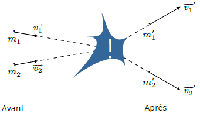
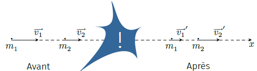
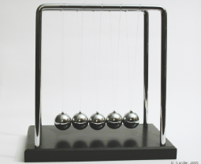
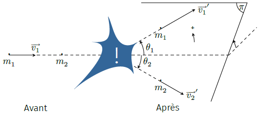
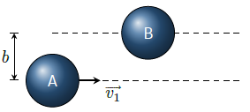

On dit qu’il y a collision ou choc entre deux ou plusieurs particules quand ces objets
subissent une interaction mutuelle de courte durée et de courte portée. Le choc est localisé
dans le temps et l’espace. En règle générale, les forces d’interaction sont négligeables
quand les particules sont suffisamment éloignées. On peut donc distinguer un avant et
un après la collision.

Choc.
Ainsi, avant et après la collision, les particules se déplacent en ligne droite avec des
vitesses uniformes. On notera \(\overrightarrow{v_i}\) la vitesse d’une particule avant le
choc et \(\overrightarrow{v_i}'\) celle après. La problématique est la suivante :
compte tenu de la mesure des vitesses \(\overrightarrow{v_i}\), peut-on déduire quelques
informations sur les vitesses \(\overrightarrow{v_i}'\) malgré l’absence de détails
concernant l’interaction lors du choc ? Réciproquement, quelle information nous
apporte la mesure des vitesses finales \(\overrightarrow{v_i}'\) ?
Grandeurs conservées
Malgré notre connaissance partielle du problème, on peut obtenir certaines informations
grâce aux lois de conservation ou de symétrie.
Désignons par \(\mathcal{S}\) le système mécanique formé par l’ensemble des particules. On
considère ce système isolé de l’extérieur (\(\overrightarrow{F^{ext}}=\overrightarrow{0}\)).
Enfin, l’analyse est effectuée dans un référentiel galiléen.
Conservation de la quantité de mouvement du système
D’après le théorème du centre d’inertie on a :
$$
\quad \frac{\mathrm{d}\overrightarrow{p_{\mathcal{S}}}}{\mathrm{d}t}
= \overrightarrow{F^{ext}}=\overrightarrow{0}
$$
La quantité de mouvement du système se conserve donc.
$$
\quad \boxed{
\overrightarrow{p_{\mathcal{S}}}^{avant} = \overrightarrow{p_{\mathcal{S}}}^{après} }
$$
Conservation de l’énergie
Si les forces d’interaction dérivent d’une énergie potentielle d’interaction
\(\mathcal{E}_p^{int}\), alors l’énergie totale du système s’écrit :
$$
\quad \mathcal{E} = \mathcal{E}_c(\mathcal{S}) + \mathcal{E}_p^{int}(\mathcal{S})
+ \sum_{particules} U_i
$$
où :
\(\mathcal{E}_c(\mathcal{S})\) représente l’énergie cinétique macroscopique du
système
\(\mathcal{E}_p^{int}(\mathcal{S})\) représente l’énergie d’interaction entre les
particules
\(U_i\) représente l’énergie interne de chaque particule
Le système étant isolé de l’extérieur, l’énergie totale se conserve. De plus, avant et après
le choc, on considère que les particules n’interagissent pas entre elles. On peut donc
écrire, si l’on note \(N_1\) le nombre de particules avant le choc et \(N_2\) celui après le
choc :
$$
\quad \boxed{
\left[ \mathcal{E}_c(\mathcal{S}) + \sum_{i=1}^{N_1} U_i \right]^{avant}
= \left[ \mathcal{E}_c(\mathcal{S}) + \sum_{i=1}^{N_2} U_i \right]^{après}
}
$$
Dans la suite on se limite aux collisions mobilisant seulement deux points matériels.
Collisions élastiques
Définition
On dit qu’il y a collision élastique lorsque le nombre de particules reste constant et que
l’énergie interne de chaque particule reste inchangée avant et après le choc. En d’autres
termes, les particules ne se déforment pas ni ne changent de nature. Les lois de
conservation sont donc :
$$
\quad \boxed{ \begin{aligned}
& m_i = m_i' \\
& \overrightarrow{p_{\mathcal{S}}}^{avant} = \overrightarrow{p_{\mathcal{S}}}^{après} \\
& \mathcal{E}_c(\mathcal{S})^{avant} = \mathcal{E}_c(\mathcal{S})^{après}
\end{aligned} }
$$
Citons quelques exemples :
collision entre boules de pétanque (boules dures indéformables)
diffusion de Rutherford (diffusion d’un noyau \({^{4}_{2}}\mathrm{He}^{2+}\) par un
noyau positif)
Collision unidimensionnelle
Traitons l’exemple d’une collision frontale élastique entre deux corps assimilables à deux
points matériels. Notons \(\overrightarrow{v_1}\), \(\overrightarrow{v_2}\) les vitesses
avant le choc et \(\overrightarrow{v_1}'\), \(\overrightarrow{v_2}'\) les vitesses après le
choc. On se place dans le cas où toutes les vitesses sont colinéaires. Le problème est donc
à une dimension et présente deux inconnues (\(\overrightarrow{v_1}'\) et
\(\overrightarrow{v_2}'\)). Ainsi, les deux lois de conservation devraient suffire à décrire
complètement le système après le choc.

Collision unidirectionnelle.
Écrivons les deux relations de conservation (conservation de la quantité de mouvement et de
l’énergie cinétique) :
$$
\quad \left\{ \begin{aligned}
m_1v_1 + m_2v_2 & = m_1v_1'+m_2v_2' \\
m_1{v_1}^2 + m_2{v_2}^2 & = m_1{v_1'}^2 + m_2{v_2'}^2
\end{aligned} \right.
$$
où les vitesses \({v_i}\) et \({v_i}'\) sont des vitesses algébriques. Cela donne :
$$
\quad \left\{ \begin{aligned}
m_1\left(v_1' - v_1\right) & = m_2\left(v_2 - v_2'\right) \\
m_1\left({v_1'}^2 - {v_1}^2\right) & = m_2\left({v_2}^2 - {v_2'}^2\right)
\end{aligned} \right.
$$
En divisant la deuxième relation par la première on obtient \(v_1'+v_1=v_2'+v_2\) et, par
substitution, on trouve les vitesses finales en fonction des vitesses initiales :
$$
\quad \begin{aligned}
& v_1' = \frac{2m_2v_2 + (m_1-m_2)v_1}{m_1+m_2} \\
& v_2' = \frac{(m_2-m_1)v_2 + 2m_1v_1}{m_1+m_2}
\end{aligned}
$$
Notons la symétrie de la solution ; il y a invariance par échange des indices \(1\)
et \(2\).
Intéressons-nous au cas où la cible est immobile. Dans ce cas, \(v_2=0\) d’où :
$$
\quad \begin{aligned}
& v_1' = \frac{m_1-m_2}{m_1+m_2}v_1 \\
& v_2' = \frac{2m_1}{m_1+m_2}v_1
\end{aligned}
$$
On note que si la cible est plus lourde que le projectile, ce dernier rebondit en changeant
de sens (\(v_1' \lt 0\)).
Dans tous les cas, la vitesse du projectile diminue en valeur absolue. On peut vérifier que
l’énergie cinétique perdue par le projectile vaut :
$$
\quad Q = \mathcal{E'}_{c1} - \mathcal{E}_{c1}
= \frac{4m_1m_2}{(m_1+m_2)^2}\mathcal{E}_{c1}
$$
Voyons maintenant quelques cas particuliers.
Si le projectile est beaucoup plus léger que la cible (\(m_1 \ll m_2\))
on a :
$$
\quad \left\{ \begin{aligned}
& {v_1}' \simeq -v_1 \\
& {v_2}' \simeq 0
\end{aligned} \right.
$$
Il y a rebond avec inversion du sens de la vitesse. Ayant une grande inertie, la cible
ne bouge pas. C’est ce que l’on obtient lorsqu’on laisse tomber une boule indéformable
par terre sur un sol parfaitement rigide.
À l’inverse, si le projectile est beaucoup plus lourd que la cible (\(m_1 \gg m_2\))
on obtient :
$$
\quad \left\{ \begin{aligned}
& {v_1}' \simeq v_1 \\
& {v_2}' \simeq 2v_1
\end{aligned} \right.
$$
C’est ce qui se passe quand on tape dans une balle avec une raquette par exemple.
Si projectile et cible ont même masse, on obtient :
$$
\quad \left\{ \begin{aligned}
& {v_1}' = 0 \\
& {v_2}' = v_1
\end{aligned} \right.
$$
Il y a échange des vitesses. C’est ce phénomène qui est à l’origine des oscillations du
pendule de Newton par exemple.

Pendule de Newton.
Collision à 3 dimensions
Considérons la collision élastique entre un point matériel de masse \(m_1\) animé d’une
vitesse \(\overrightarrow{v_1}\) et un point matériel de masse \(m_2\) initialement au
repos.
Les lois de conservation donnent :
$$
\quad \left\{ \begin{aligned}
m_1\overrightarrow{v_1} & = m_1\overrightarrow{v_1}' + m_2\overrightarrow{v_2}' \\
m_1{v_1}^2 & = m_1{v_1'}^2 + m_2{v_2'}^2
\end{aligned} \right.
$$
Ce système présente quatre équations scalaires pour six inconnues (\(\overrightarrow{v_1}'\)
et \(\overrightarrow{v_2}'\)). Il reste donc deux paramètres indéterminés si on se limite
aux lois de conservation.
La première relation nous dit que le mouvement se fait dans un plan contenant
\(\overrightarrow{v_1}\). Il nous suffit d’un paramètre (un angle par exemple) pour fixer ce
plan. Ensuite si l’on connait la déviation entre les particules, alors les autres paramètres
sont accessibles. Notez que seule une étude complète faisant intervenir l’interaction permet
d’accéder à toutes les informations.

Collision entre un projectile et une cible fixe.
On se place dans le cas où \(m_1=m_2\).
Cette situation se rencontre par exemple au billard si l’on n’oublie les effets produits par
la rotation de la bille. Le système d’équations précédent donne :
$$
\quad \left\{ \begin{aligned}
\overrightarrow{v_1} & = \overrightarrow{v_1}' + \overrightarrow{v_2}' \\
{v_1}^2 & = {v_1'}^2 + {v_2'}^2
\end{aligned} \right.
$$
Si on élève la première équation au carré, on trouve \({v_1}^2 = {v_1'}^2 + {v_2'}^2
+2\overrightarrow{v_1}' \cdot \overrightarrow{v_2}' \). En la soustrayant à la deuxième,
on obtient :
$$
\quad \overrightarrow{v_1}' \cdot \overrightarrow{v_2}' = 0
$$
Les deux vecteurs vitesses forment un angle droit. Autrement dit, on a :
$$
\quad \theta_1 - \theta_2 = \pi/2
$$
Continuons en multipliant la première relation par \(\overrightarrow{v_1}'\) :
$$
\quad \overrightarrow{v_1}' \cdot \overrightarrow{v_1}
= \overrightarrow{v_1}'^2 + \overrightarrow{v_1}' \cdot \overrightarrow{v_2}'
= \overrightarrow{v_1}'^2
$$
Soit
$$
\quad v_1v_1'\cos \theta_1 = v_1'^2 \quad \Rightarrow \quad v_1' = v_1\cos \theta_1
$$
De la même façon, en multipliant la première relation par \(\overrightarrow{v_2}'\) on
obtient :
$$
\quad v_2' = v_1\cos \theta_2
$$
En résumé on a :
$$
\quad \left\{ \begin{aligned}
v_1' = v_1\cos \theta_1 \\
v_2' = v_1\cos \theta_2 \\
\theta_1 - \theta_2 = \pi/2
\end{aligned} \right.
$$
Par conséquent, si l’on connait \(\theta_1\) et \(v_1\) on peut calculer \(v_1'\), puis
\(\theta_2\) et \(v_2\).
Dans le cas du billard, l’angle \(\theta_1\) ne dépend que d’une grandeur : le
paramètre d’impact \(b\). On montre que :
$$
\quad \cos \theta_1 = \frac{b}{2R}
$$
où \(R\) représente le rayon des billes.

Paramètre d’impact.
En visée pleine bille, \(b=0\) et \(\theta_2 = 0\). Dans ce cas, on obtient
\(v_1'=0\) et \(v_2'=v_1\) : on retrouve la collision directe de deux masses
identiques.
En visée demi-bille, \(b=R/2\) d’où \(\theta_1 = 60°\), \(\theta_2 = -30°\),
\(v_1'=v_1/2\) et \(v_2'=v_1\sqrt{3}/2\).
Dans le cas où la bille frôle la cible (on parle de visée finesse) on a
\(b \to 2R\), \(\theta_2 = 90°\) et \(v_2' \simeq 0\) : la cible est dévié de 90°
par rapport à la ligne de visée avec une vitesse cependant faible.